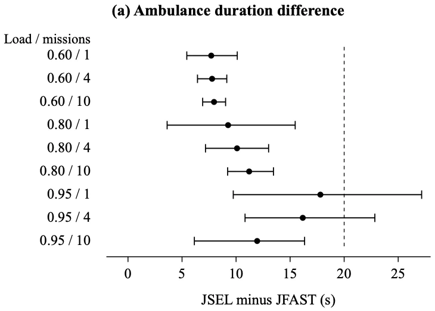
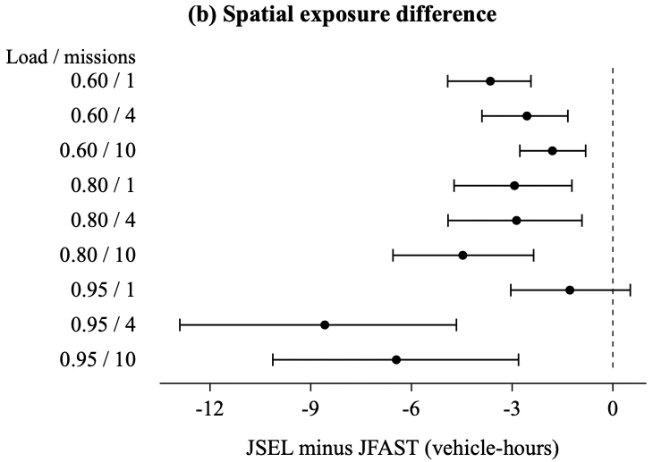

1. AmbuGo
a. Ambulance delays and traffic priority
When an ambulance is delayed at signals, it loses time reaching a patient or hospital. In Delhi, the fleet grew from 155 to 261 vehicles, yet reported response time increased from 13 to 17.4 minutes between 2014 and February 2025. Delays in medical help are reported to cause 24,012 deaths daily in India alone.
A route that looks fastest under normal signals may not remain fastest once a junction is given ambulance priority, because the released traffic changes queues farther ahead. I developed AmbuGo to plan the route and signal interventions together, using existing automatic number-plate-recognition (ANPR) cameras and authorised signal-controller connections rather than a new roadside sensor network.
b. Routing, selective signal priority and driver override
- Observe current trafficUse ambulance telemetry and available traffic counts.
- Compare route–priority choicesScore travel time and traffic burden together.
- Request a feasible interventionCheck signal phases and downstream receiving space.
- Measure progress & repeatEscalate priority when observed movement falls behind.
The minimum-intervention joint controller compares routes together with the signal changes each would require. It first retains choices that meet a predicted ambulance-arrival allowance, then selects the one that causes less delay to other drivers. This is selective priority: the system requests enough intervention to keep the ambulance on schedule, while accounting for queues that those changes create elsewhere.
Minimum-green and clearance constraints preserve the legal signal sequence, while receiving-space checks prevent traffic being released onto a full road. Progress feedback increases priority if the ambulance falls behind; removing it added 38.82 seconds in the high-load test. A driver override lets crews change routes around a blockage, updating signal requests along the new path.
c. Traffic measures and simulation network
To measure disruption to other traffic, I counted additional vehicles on each road over time relative to routing alone. The total is expressed in vehicle-hours: ten extra vehicles present for six minutes contribute one vehicle-hour. This measures additional traffic accumulated across the network, rather than the delay of one car; waiting before network entry and unfinished journeys remain in the accounting.

d. Comparative traffic simulations and results


I compared controllers under matching traffic demand and observation errors through 14,400 mesoscopic and 1,728 held-out microscopic runs, with individual-vehicle tests in Eclipse SUMO. Routing alone leaves signals unchanged; aggressive priority uses stronger intervention to seek the fastest ambulance journey; selective priority limits intervention within its predicted arrival allowance.
Selective priority reduced mean journey time from 401.57 to 222.29 seconds, retaining about 94% of aggressive control’s time saving. It took 11.10 seconds longer than aggressive control while reducing excess road occupancy by 3.84 vehicle-hours, meaning less additional traffic accumulated on surrounding roads over the course of the simulation.
In the simulations, AmbuGo retained 94% of aggressive priority’s time saving for the ambulance while causing less traffic to build up on surrounding roads.
e. Operator dashboard and ambulance-driver interface
The two screens below show how AmbuGo is used: the traffic-control dashboard lists active ambulance missions and signal-priority requests, while the driver view shows the selected route and upcoming instructions.
Priority requests
Connected · observations 1.2 s ago| Mission / junction | Requested change | Checks | Decision |
|---|---|---|---|
| AG-014 · Phase 7East approach · ETA 19 s | Extend green8 s requested | Clearance satisfiedReceiving space available | Ready |
| AG-018 · Sector 61North approach · ETA 31 s | Advance phaseNext compatible transition | Clearance remaining3 s before transition | Waiting |
| AG-022 · Phase 9West approach · ETA 24 s | Green extension6 s requested | Downstream occupiedIllustrative occupancy: 92% | Held |
| AG-014 · Sector 62Next corridor junction | Retain current plan | Progress within allowance | Baseline |
12:04:18 Request received · 12:04:19 Constraints checked · 12:04:19 Awaiting controller acknowledgement
Receiving hospital · route updates follow observed progress
f. Punjab pilot and expanded deployment
A separate 31-intersection Punjab pilot recorded approximately 32% lower emergency response time. Phase 1 expanded to 121 intersections in August 2026, supporting roughly 700 ambulance movements daily.